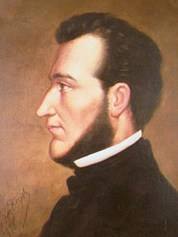

Antes de la conquista española, el actual territorio de Honduras estaba habitado por pueblos indígenas que se caracterizaban por dos tipos culturales diferentes, formados como producto de las migraciones que poblaron el continente americano en la época precolombina. Las culturas maya y azteca estaban regidas por el llamado modo de producción asiático, cuya característica más sobresaliente era la existencia de una economía sedentaria, basada en la producción agrícola, con relaciones de producción de carácter colectivo centralizadas en un poder único que era ejercido por un conjunto de funcionarios civiles, religiosos y militares. Por lo tanto, no eran sociedades igualitarias. La división de clases se establecía entre los que ejercían el poder y la mayoría del pueblo
Estas culturas alcanzaron grandes progresos en los diversos campos del conocimiento humano, impulsadas por el desarrollo de una variada agricultura (frijol, cacao, chile, etc.) y contaban con grandes sistemas de riego. De esta manera garantizaban una alimentación adecuada para sus numerosas poblaciones. Además, aplicaron técnicas de gran perfección en los tejidos y la cerámica. Desarrollaron un intenso y variado comercio. Alcanzaron un alto desarrollo científico en las matemáticas y la astronomía, además de la arquitectura y la escultura, que emplearon en la construcción de grandes ciudades.
En la parte noroccidental de Honduras, predominaban los pueblos de los chortís, grupo mayance localizado en Copán y Ocotepeque, y los lencas que se extendían por los departamentos de Santa Bárbara, Lempira, Intibucá, La Paz, Comayagua, Francisco Morazán y Valle y parte de lo que hoy comprende el territorio de El Salvador.
El resto del territorio hondureño estaba habitado por pueblos provenientes del sur del continente, con una cultura nómada y seminómada, regidos por relaciones de producción comunal primitivas. Entre estos pueblos se encontraban tolupanes (denominados también xicaques), pech (denominados asimismo "payas"), tawahkas y misquitos que, en su conjunto, formaban la mayoría de la población del país. Después de la segunda mitad de 1700 se conformaron otros grupos étnicos a lo largo de la zona costera del litoral Caribe: los garífunas y los negros de habla criolla inglesa.
El resto del territorio hondureño estaba habitado por pueblos provenientes del sur del continente, con una cultura nómada y seminómada, regidos por relaciones de producción comunal primitivas. Entre estos pueblos se encontraban tolupanes (denominados también xicaques), pech (denominados asimismo "payas"), tawahkas y misquitos que, en su conjunto, formaban la mayoría de la población del país. Después de la segunda mitad de 1700 se conformaron otros grupos étnicos a lo largo de la zona costera del litoral Caribe: los garífunas y los negros de habla criolla inglesa.
El área maya comprende lo que en nuestros días son los países de Honduras, Guatemala, El Salvador y sur de México.Los mayas florecieron en estos países en los primeros quince siglos de la era cristiana.Causas desconocidas hasta hoy provocaron el abandono y la destrucción de Copán y otras ciudades mayas, que en la época de la conquista española ya no eran más que ruinas. Hambre, pestes, guerras internas se han propuesto como las causas del abandono.
Representación de Cristóbal Colón y su arribo al continente americano que tuvo lugar en el Cabo Honduras el 1 de octubre de 1502.
En marzo de 1524, Gil González Dávila se convirtió en el primer español en arribar a Honduras con propósitos de conquista. Fundó la villa de San Gil de Buena Vista y se internó en territorio hondureño pacificando a los indios, luchando contra los españoles que le disputaban el territorio, así como esperanzado en encontrar el desaguadero del lago de Nicaragua.
Luego Hernán Cortés, movido por los informes que había recibido sobre la gran riqueza del país, envió entonces dos expediciones, una por tierra y otra por mar. Encargó la primera a Pedro de Alvarado y la segunda a Cristóbal de Olid. Pero este último lo traicionó. Por este motivo, Cortés salió de México a la cabeza de una expedición que duró cerca de dos años y terminó, tras miles de peligros y privaciones, en Trujillo (Honduras).
En marzo de 1524, Gil González Dávila se convirtió en el primer español en arribar a Honduras con propósitos de conquista. Fundó la villa de San Gil de Buena Vista y se internó en territorio hondureño pacificando a los indios, luchando contra los españoles que le disputaban el territorio, así como esperanzado en encontrar el desaguadero del lago de Nicaragua.
Luego Hernán Cortés, movido por los informes que había recibido sobre la gran riqueza del país, envió entonces dos expediciones, una por tierra y otra por mar. Encargó la primera a Pedro de Alvarado y la segunda a Cristóbal de Olid. Pero este último lo traicionó. Por este motivo, Cortés salió de México a la cabeza de una expedición que duró cerca de dos años y terminó, tras miles de peligros y privaciones, en Trujillo (Honduras).
Pintura que representa la celebración del Primer Grito de Independencia de Centroamérica en 1811 en la ciudad de San Salvador. Al centro, José Matías Delgado
Por cerca de tres siglos Honduras fue parte de la Capitanía General de Guatemala, por lo que su independencia, giró alrededor de los acontecimientos proindependentistas en las demás provincias. Luego de la ocupación de España por parte de los franceses, se produjeron en Nicaragua, El Salvador y Guatemala (1811-1813) los primeros actos de insurrección en favor de la independencia de Centroamérica. En Honduras, los españoles recurrían a la perpetuidad en el poder con el propósito de ahogar la causa independentista.
Desde 1813 a hasta 1820, no se dieron en Centroamérica otros sucesos notables en relación a la independencia. Fue hasta principios de 1821, cuando México a través del Plan de Iguala declaró su independencia total de España el 24 de febrero. Este suceso, aceleró la independencia de Centroamérica, la cual se consumó el 15 de septiembre de 1821 con una declaración, la cual fue redactada por José Cecilio del Valle.
La euforia de la independencia duró muy poco, ya que en enero de 1822, por iniciativa de los conservadores, y del emperador Agustín de Iturbide, las provincias unidas de Centroamérica se unieron al imperio mexicano. Esta unión duró hasta la caída del mismo Iturbide en marzo de 1823.
Francisco Morazán: Libertador hondureño
